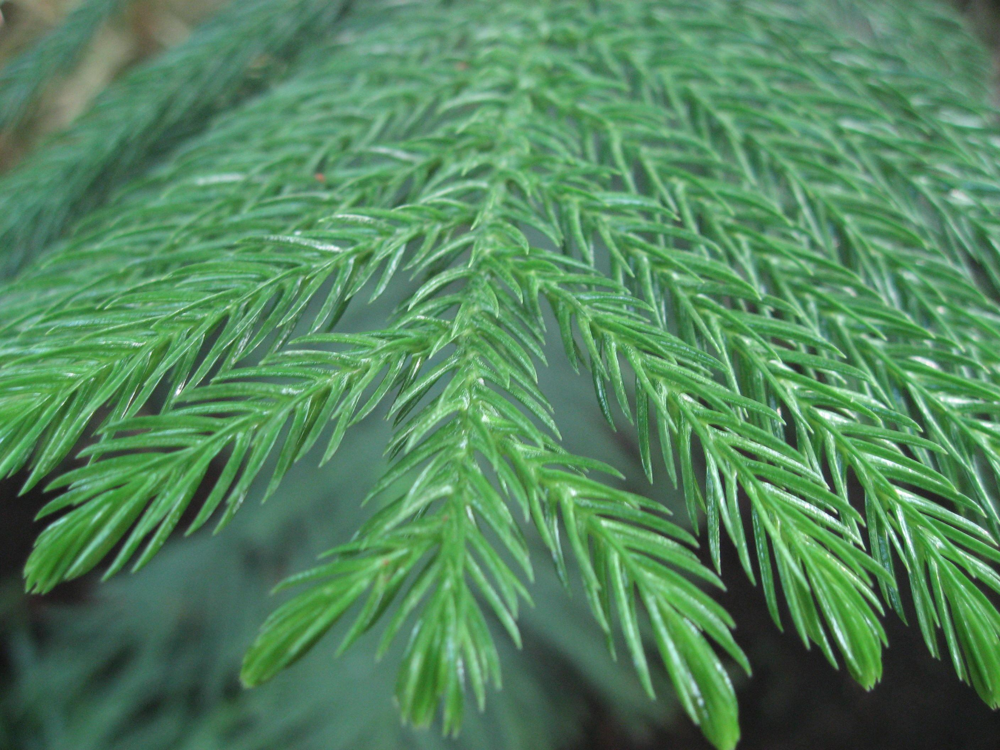
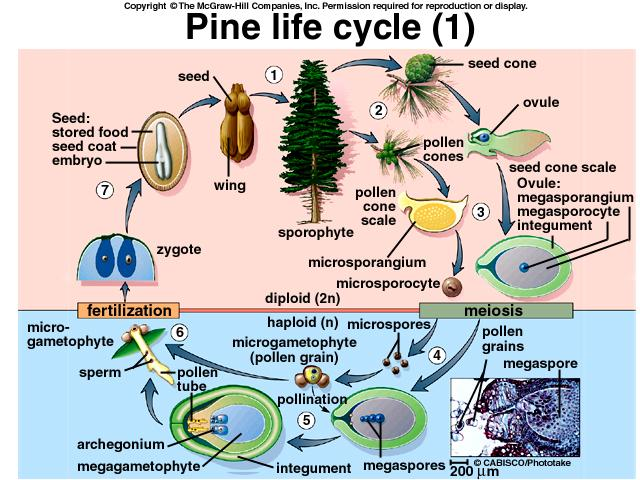

PROBLEME RESOLU: se reproduire sans eau libre
Les conifères ont développé des innovations qui rendent leur reproduction moins dépendante de l'eau extérieure.
Le pollen transporte les éléments reproducteurs mâles, généralement grâce au vent. L'ovule est protégé et, après fécondation,
il donne une graine nue. Cette graine n'est pas enfermée dans un fruit. Ces adaptations permettent aux conifères de mieux coloniser les milieux terrestres.
APPAREIL VEGETATIF

Les conifères sont généralement des plantes ligneuses qui possèdent des racines, un tronc et des branches. Leur appareil végétatif est adapté à une vie terrestre durable.
Chez plusieurs espèces, les feuilles sont en forme d'aiguilles ou d'écailles, ce qui contribue à limiter les pertes d'eau.
Leurs tissus conducteurs assurent le transport de l'eau et des substances nutritives. Leur croissance peut conduire à la formation de grands arbres capables de vivre pendant de nombreuses années.
CYCLE DE REPRODUCTION

Les conifères portent généralement des cônes mâles et des cônes femelles. Les cônes mâles produisent les grains de pollen, qui sont transportés principalement par le vent.
Le pollen atteint l'ovule situé sur une écaille du cône femelle et permet la fécondation sans qu'un film d'eau extérieur soit nécessaire. Après la fécondation, l'ovule se transforme en graine nue.
Lorsque les conditions sont favorables, cette graine peut germer et donner naissance à un nouveau conifère.